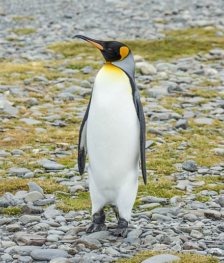

Home
About me
Gallery
Blog
Contact me
The king penguin (Aptenodytes patagonicus) is the second largest species of penguin,
smaller, but somewhat similar in appearance to the emperor penguin.
King penguins mainly eat lanternfish, squid and krill. On foraging trips, king penguins repeatedly dive to over 100 metres (300 ft),
and have been recorded at depths greater than 300 metres (1,000 ft).
[3] Predators of the king penguin include giant petrels, skuas, the snowy sheathbill, the leopard seal and the orca.
King penguins breed on the Subantarctic islands at the northern reaches of Antarctica,
South Georgia, and other temperate islands of the region.